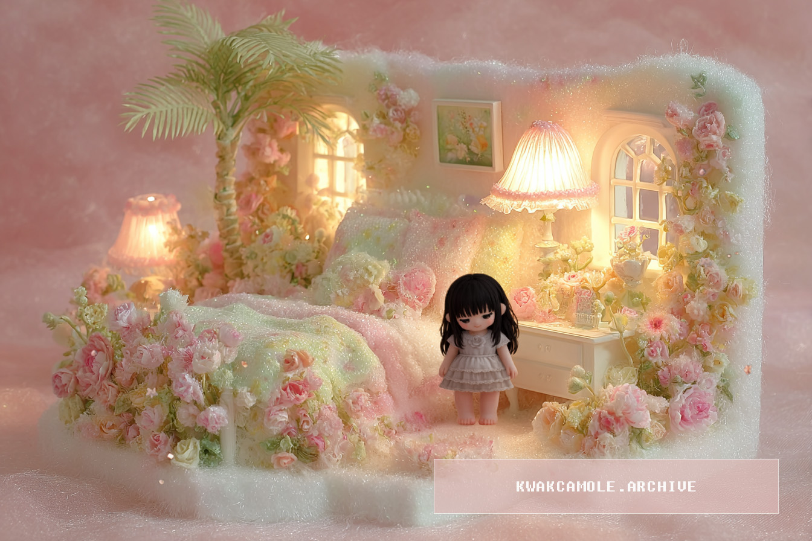

Soft things gather and linger.
일상의 오브제를 섬유적 물성과 부드러운 질감으로
재구성하는 작업을 기록합니다.
재구성하는 작업을 기록합니다.
A personal archive observing how softness accumulates and lingers through textiles, objects, and everyday forms. It focuses on texture, layering, and traces of the hand, valuing states of lingering over finished outcomes.